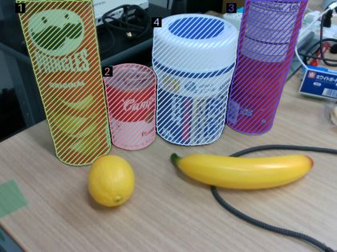
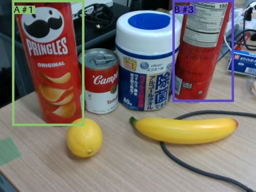
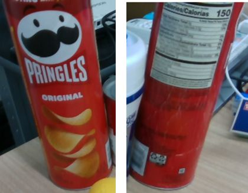
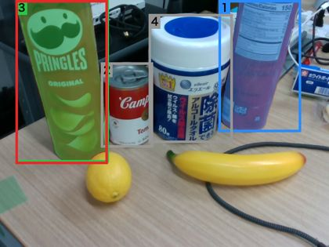
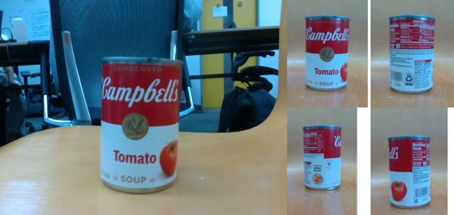
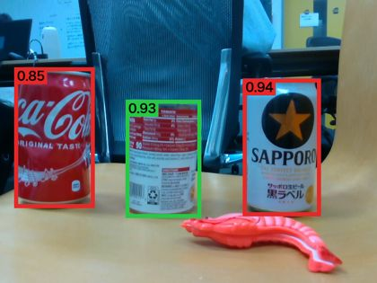
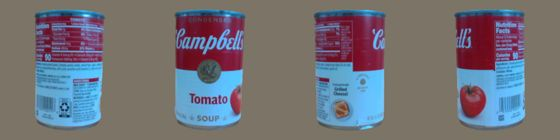
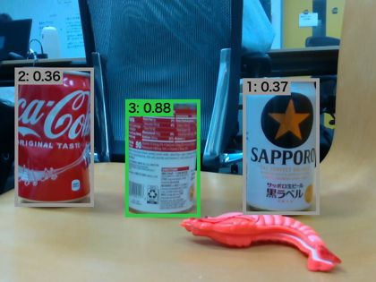
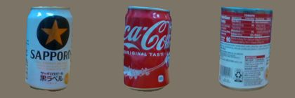

SAM 3.1 は「缶」「ボトル」のような種類の言葉には強いが、「pringles」「キャンベル」のような商品名では
見た目の似た別の商品も拾う（2026-10-11、「pringles」でプリングルズ 0.84、キャンベル缶 0.74）。
商品名の物だけを見つけるために試した方式と、方式を選んだ経緯をまとめる。
詳しい手順・条件・再実行の方法は README.md、全写真の結果は
python report.py で手元に作るレポートを参照する。
SAM 3.1＋DINOv2（参照画像との見比べ）を選んだ。
キャンベル缶の27枚で、正解した写真が最も多く（23/27）、1枚 0.4 秒と案A（平均 28 秒）より約70倍速い。
検出では Qwen を使わず、裏向きの缶も参照画像の背面・側面と見比べて見つけられた。
SAM 3.1 に渡す種類の言葉は、登録のときに Qwen が参照画像を1回見て決める（固有名詞をそのまま渡すと候補から漏れる）。
Qwen を使わない場合は、種類の言葉を自分で指定する。
ただし、しきい値は同じ27枚で選んだ値で、撮影場所が変わると点数が下がる（下の「注意点」）。
使い方（参照画像の撮影 → 場面の撮影 → dino.py detect）は README.md にある。本体の sam31/interactive.py --vlm は案Aのまま。
| 日付 | 試したこと | 結果と判断 |
|---|---|---|
| 10-11 | 案A：Qwen が言い換え → SAM 3.1 で候補 → Qwen が番号で選ぶ | 5つの言葉で全部正解。ただし同じ商品が2つあると1つしか選ばない → 元の写真も渡し「全部選ぶ」と指示して解決。裏向きのプリングルズを見逃す（19回中17回正解）。 |
| 10-11 | 案A＋照合：選ばれなかった候補を、選ばれた物と横に並べて「同じ商品か」聞く | 高さをそろえて並べると、大きさの違うキャンベル缶まで「同じ」になり 14/19 に悪化。 |
| 10-13 | 照合で実際の大きさをそろえ、深度から測った cm も伝える | 19/19。裏向きのプリングルズを拾い、キャンベル缶は大きさの違いで除外。1回 12〜30 秒。 |
| 10-13 | 案B：Qwen に対象の枠を描かせ、SAM 3.1 に枠を渡す | 枠だけ（B1）は 17/19、速い（約4秒）が裏向きを見逃す。枠＋形の言葉＋照合（B2）は 19/19、約16秒。 |
| 10-13 | Qwen を使わず、SAM 3.1 に参照画像を渡す方法を調査 | SAM 3 のお手本の枠は同じ画像の中でしか使えない（facebookresearch/sam3 issue #426）。参照画像を横に並べて1枚にする方法がある（MoveIt Pro、FSS-SAM3）。参照画像を撮る sam31/reference.sh を作った。 |
| 10-18 | プリングルズが手元になく、対象をキャンベル トマトスープ缶に変更。参照画像4方向を撮影し、新しい場面9枚を追加（計27枚） | 同じ27枚と同じ正解で各方式を比べる。案Aも「campbell」で実行し直した（19/27）。 |
| 10-18 | 参照を並べる方式（SAM 3.1だけ） | どの条件でもコカ・コーラ缶やプリングルズがキャンベル缶とほぼ同じ点数になり、最良でも 8/27。SAM 3.1 は参照画像を「この商品」ではなく「缶という種類」として扱う → 不採用。 |
| 10-18 | SAM 3.1＋DINOv2：「can」で缶を全部出し、1つずつ参照画像4方向と見た目を比べる | DINOv2 large で 23/27、0.4 秒 → 採用。 |
| 10-18 | 固有名詞1つで使えるように、SAM 3.1 に渡す言葉を5通り比べた | 固有名詞のままだとキャンベル缶28個中4個が候補に出ず、object では3個しか出ない。Qwen が参照画像から決めた言葉（cylindrical can）は人が決めた can と同じ 23/27 → 採用（登録時に1回、約10秒）。 |
interactive.sh --vlm）① Qwen が言葉を英語の言い換え（例：「metal food can」）に広げる → ② SAM 3.1 でしきい値 0.3 の候補を出す → ③ Qwen に元の写真と番号付きの候補図を見せ、対象を全部選ばせる → ④ 選ばれなかった候補を、選ばれた物と実際の大きさで横に並べ、cm の大きさも添えて「同じ商品か」を聞く（照合）。



B1：Qwen に対象の枠を描かせ（0〜1000の座標）、SAM 3.1 に枠を渡し、枠に重なるマスクだけ残す。 B2：1回の問い合わせで枠と「cylindrical can」のような形の言葉を受け取り、SAM 3.1 に枠と言葉を渡す。 枠に重なるマスクは採用し、枠の外の似た物は案Aの照合にかける。言葉が商品名のままのときは、(a)「container」を使う、 (b) 枠の中だけを見せて聞き直す。

撮影画像の右に参照画像（正面だけ、または4方向を2×2）を並べ、参照の物に枠を付けて SAM 3.1 に渡す。言葉はなし・「can」・「soup can」・「campbell's tomato soup」を試した。


① SAM 3.1 に「can」と言って缶の候補を全部出す → ② 候補ごとにマスクで背景を消して正方形に切り出す → ③ DINOv2 で参照画像4方向との似ている度合い（コサイン類似度）を測り、一番高い値を候補の点数にする → ④ 点数がしきい値（large で 0.52）以上なら採用。
種類の言葉（SAM 3.1 に渡す can など）は、登録のときに Qwen が参照画像の中央の物を1回見て決め、参照画像と一緒に保存する。
検出のときは保存した言葉を使うので、Qwen は使わない。言葉を自分で指定すれば Qwen なしでも使える。

sam31/reference.sh --name campbell で撮影）。


| 方式 | 正解した写真 | 見つけた / 誤り / 見逃し | 1枚の時間（平均） | 最長 |
|---|---|---|---|---|
| 案A 選択のみ | 17 / 19 | 22 / 0 / 2 | 31.32 秒 | 107.30 秒 |
| 案A 選択＋照合 | 19 / 19 | 24 / 0 / 0 | 31.32 秒 | 107.30 秒 |
| 案B1 Qwenの枠だけ | 17 / 19 | 22 / 0 / 2 | 3.66 秒 | 11.59 秒 |
| 案B2 枠＋言葉＋照合（a: container） | 19 / 19 | 24 / 0 / 0 | 16.29 秒 | 41.60 秒 |
| 案B2 枠＋言葉＋照合（b: 聞き直し） | 19 / 19 | 24 / 0 / 0 | 15.49 秒 | 43.30 秒 |
| 方式 | 正解した写真 | 見つけた / 誤り / 見逃し | 1枚の時間（平均） | 最長 | しきい値 |
|---|---|---|---|---|---|
| 案A（SAM 3.1＋Qwen） | 19 / 27 | 24 / 5 / 4 | 28.31 秒 | 69.40 秒 | - |
| 参照を並べる（front+soup can） | 8 / 27 | 23 / 21 / 5 | 0.41 秒 | 0.99 秒 | 0.88 |
| SAM 3.1＋DINOv2 small | 17 / 27 | 17 / 0 / 11 | 0.37 秒 | 0.39 秒 | 0.73 |
| SAM 3.1＋DINOv2 base | 19 / 27 | 25 / 10 / 3 | 0.37 秒 | 0.39 秒 | 0.65 |
| SAM 3.1＋DINOv2 large | 23 / 27 | 25 / 1 / 3 | 0.39 秒 | 0.40 秒 | 0.52 |
時間は DGX での処理時間で、写真の転送は含まない。しきい値は同じ写真で一番良い値を選んだので、しきい値を使う方式の正解数は甘め。 案Aの27枚は言葉「campbell」で実行し、照合でキャンベル缶の隣の缶を加えた写真が4枚、見逃しが3枚あった。案Bはキャンベル缶の27枚では試していない。
| SAM 3.1 に渡す言葉 | キャンベル缶が候補に出た数 | 候補の数（平均） | 正解した写真（しきい値） | 見つけた / 誤り / 見逃し | しきい値 0.52 のまま | 1枚の時間 |
|---|---|---|---|---|---|---|
| ① 種類を人が決める（can） | 28 / 28 | 2.9 | 23 / 27（0.52） | 25 / 1 / 3 | 23 / 27 | 0.39 秒 |
| ② 固有名詞をそのまま（campbell's tomato soup） | 24 / 28 | 1.9 | 21 / 27（0.51） | 23 / 2 / 5 | 21 / 27 | 0.38 秒 |
| ③ object に固定 | 3 / 28 | 0.6 | 2 / 27（0.47） | 2 / 0 / 26 | 2 / 27 | 0.35 秒 |
| ④ 種類を Qwen が決める（cylindrical can） | 28 / 28 | 2.9 | 23 / 27（0.52） | 24 / 2 / 4 | 23 / 27 | 0.38 秒 |
| ⑤ よくある種類7語をまとめて | 28 / 28 | 3.5 | 23 / 27（0.52） | 25 / 1 / 3 | 23 / 27 | 2.44 秒 |
DINOv2 は候補の中からしか選べないので、キャンベル缶が候補に出ることが前提になる。